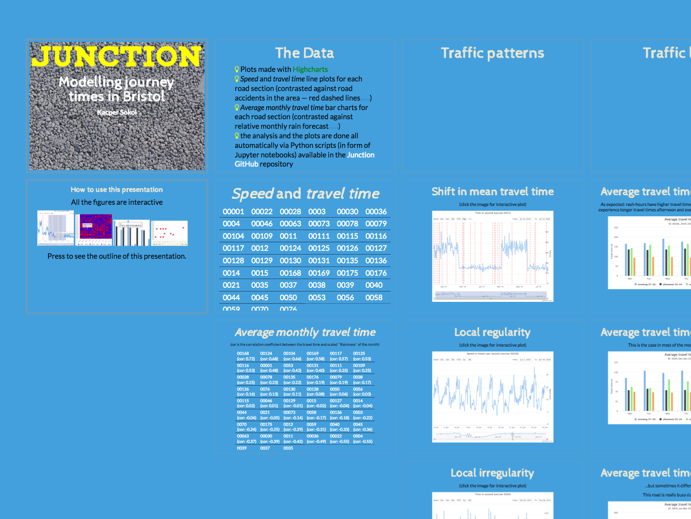
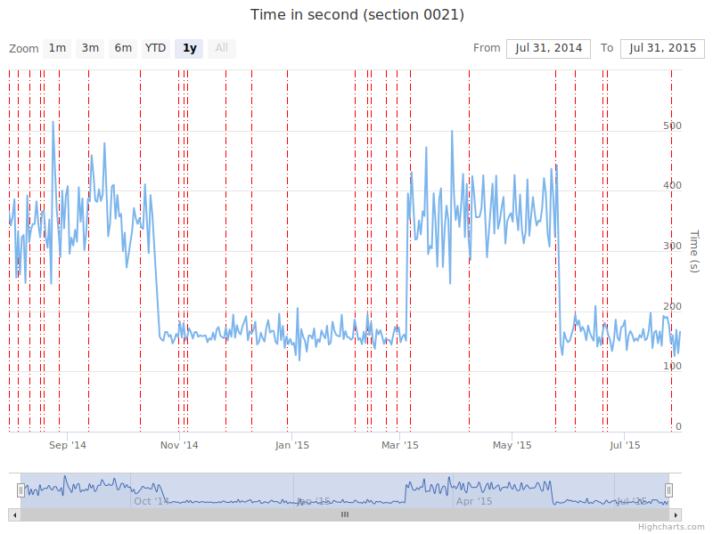
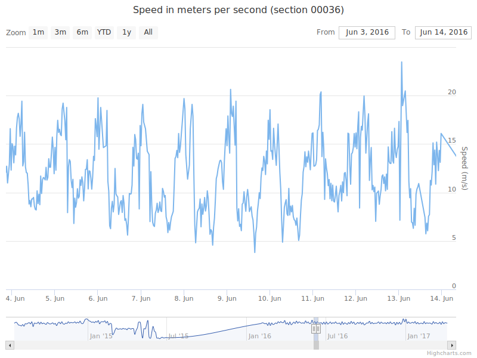
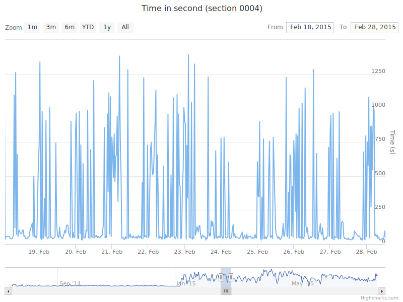
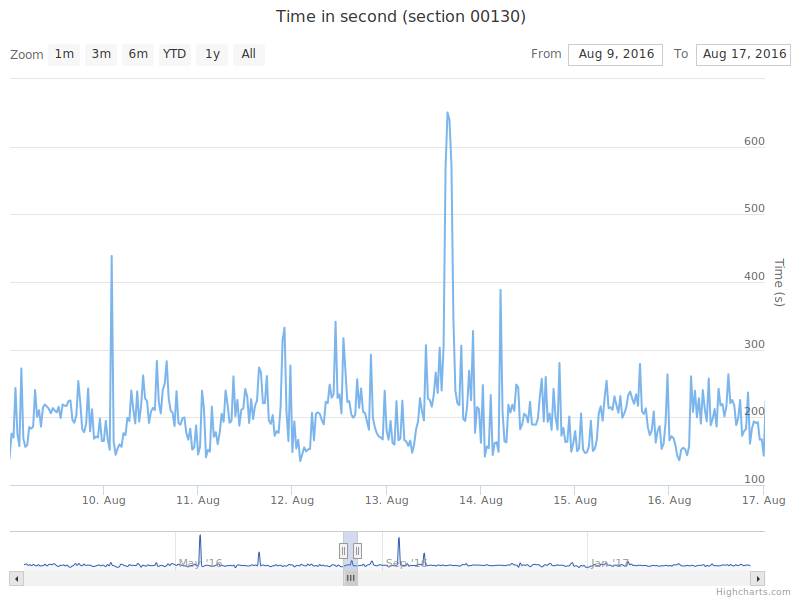
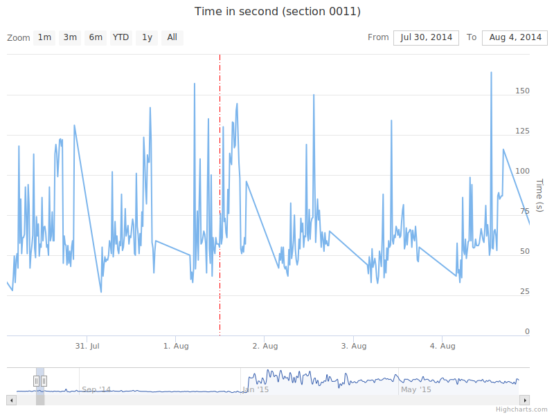
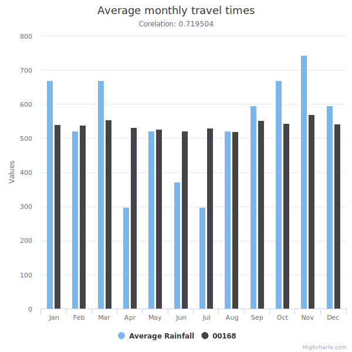
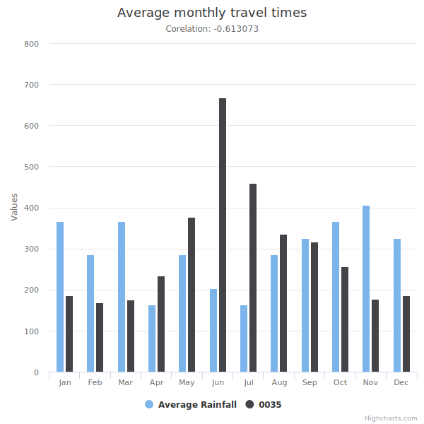

All the figures are interactive:
Press <esc> key to see the outline of this presentation:
(cor is the correlation coefficient between the travel time and scaled ``Raininess'' of the month)
(click the image for interactive plot)
(click the image for interactive plot)
(click the image for interactive plot)
As expected: rash-hours have higher travel times then middays and nights; weekends experience longer travel times afternoon and evening and lower in mornings and nights
This is the case in most of the monitored road sections...
...but sometimes it differ significantly!
This road is really busy during the night!
In the given data a change of traffic patterns is most significantly affected on road section 0011 (Hotwell Rd OB to Portway OB), which is relatively close to where the Balloon Fiesta is happening.
(click the image for interactive plot)
Analysing accidents influence on the journey times is a bit of a guess-work as the government dataset gives geographical location and the date (no specific time, therefore the red marker is always at 12pm). Also the accident is assigned to the nearest road section in the dataset (but no further than 1000m away).
(click the image for interactive plot)
7 out of 51 sections have significant positive correlation with rain (above 0.5). For example: 00168, 00169 (reverse direction to 00168), 00124 and 00125 (reverse direction to 00124).
In Bristol July is the driest month and November is the rainiest.
5 out of 51 sections have significant negative correlation with rain (below -0.5). For example 0035 and its reverse direction 00036.
In the morning more cars are coming into the city and in the evening more cars are leaving the city.
You can see the journey time correlation heat map HERE.
For instance when the journey times at 00001 are high they are also high at 00030 and 00036 but at the same time they are low at 0015, 0050 and 0070.